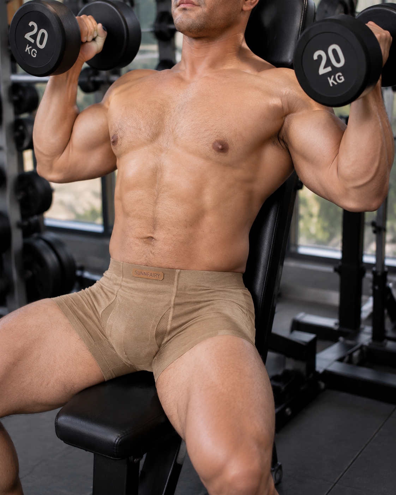
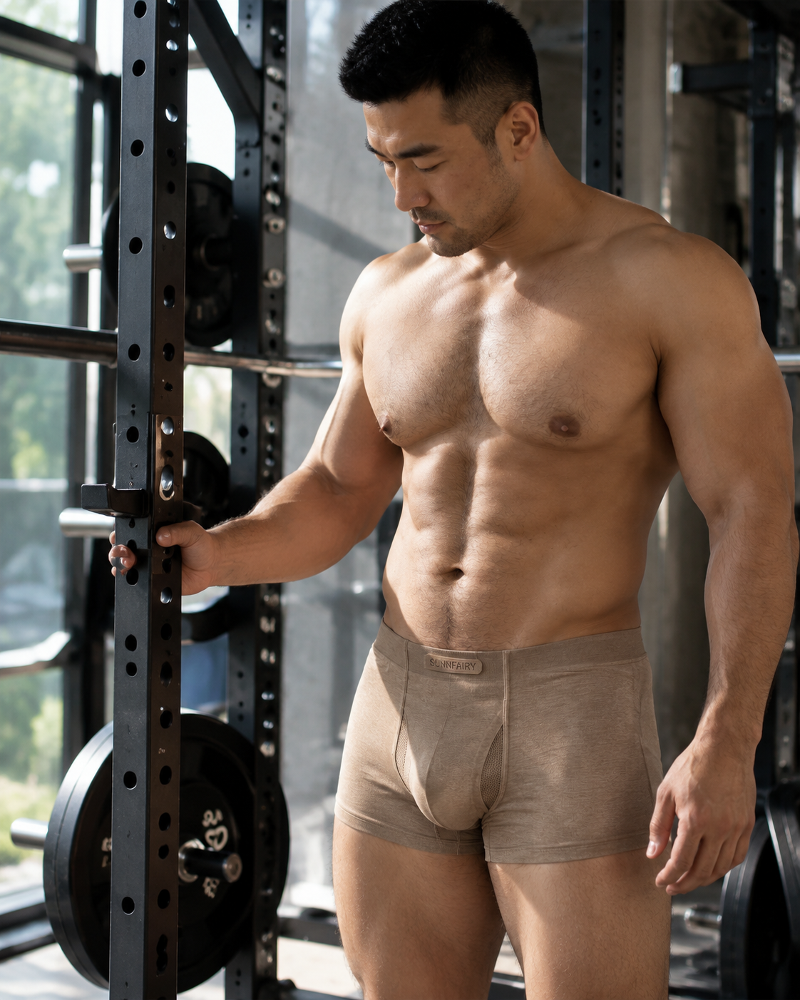
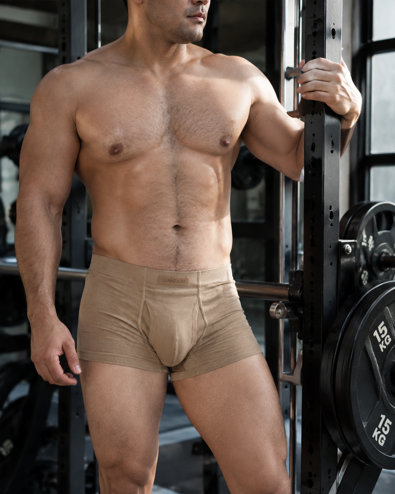
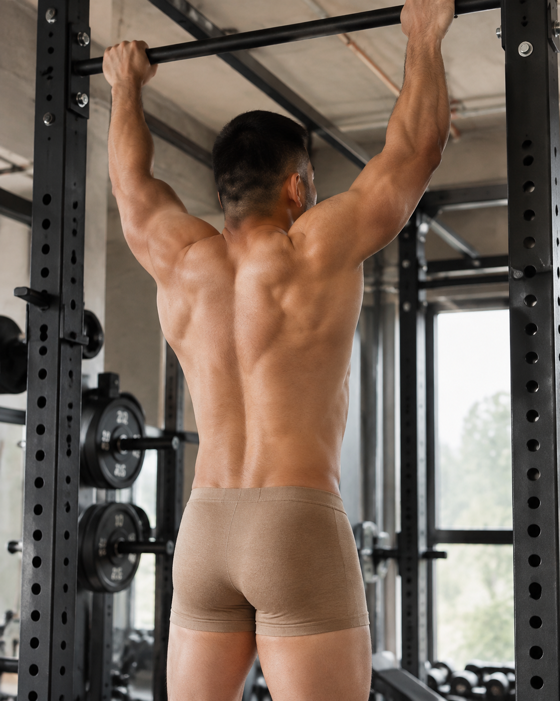
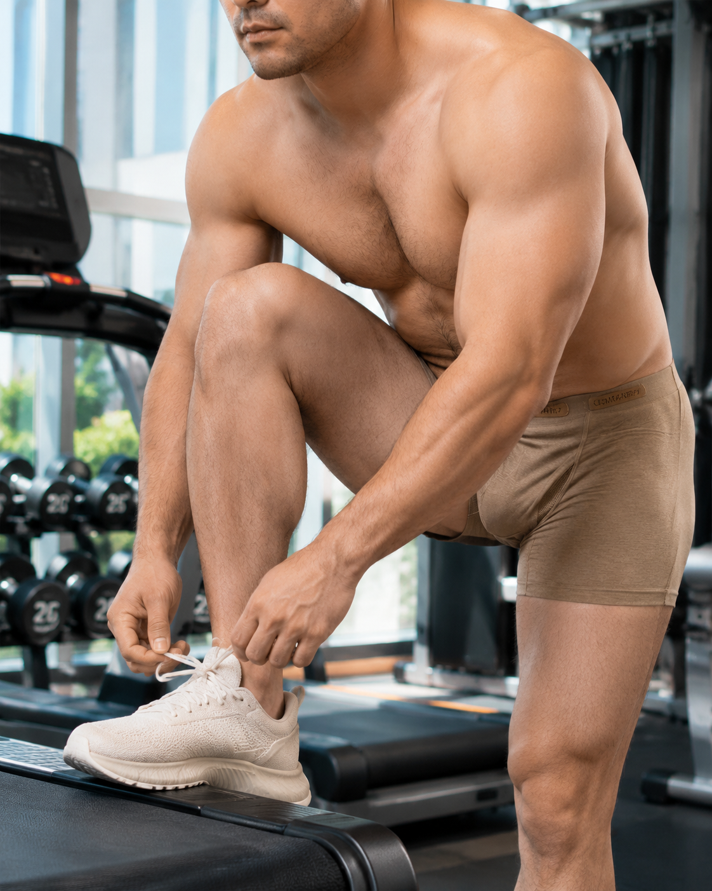
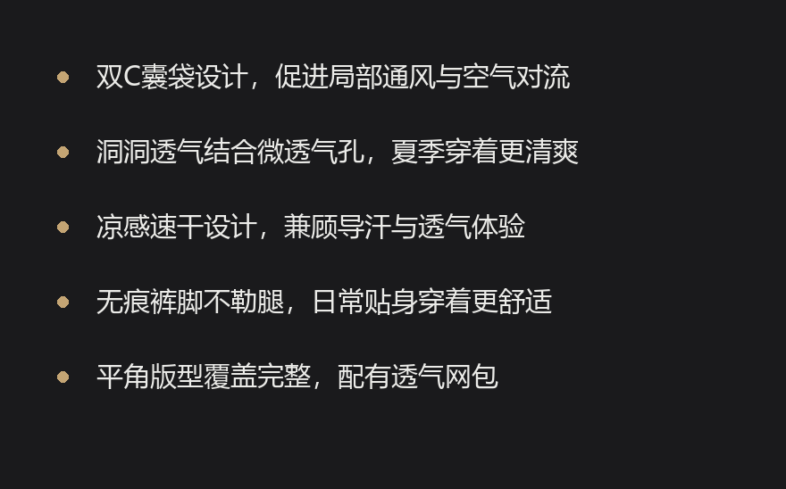
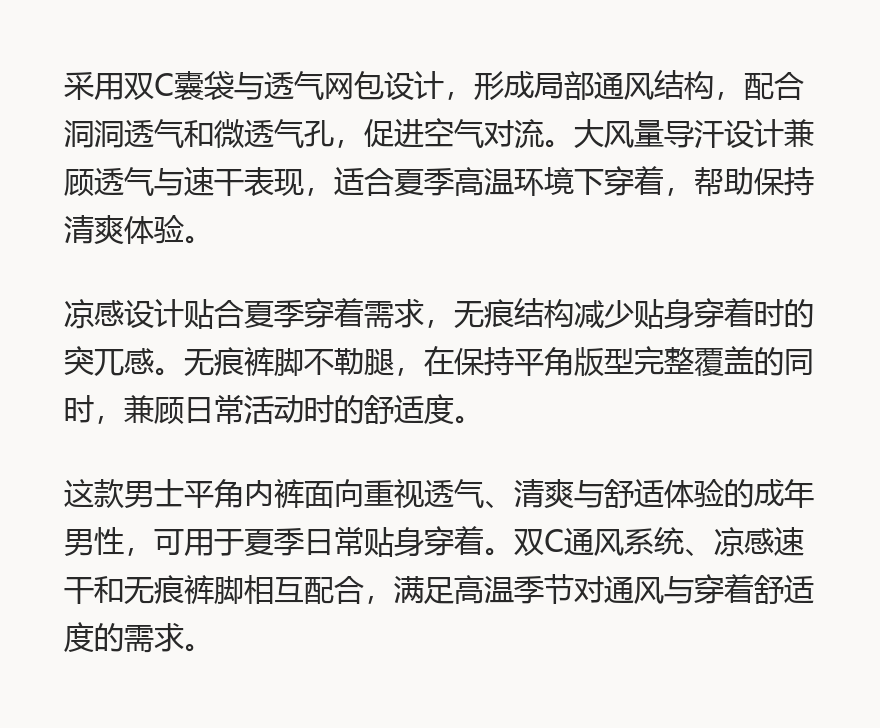
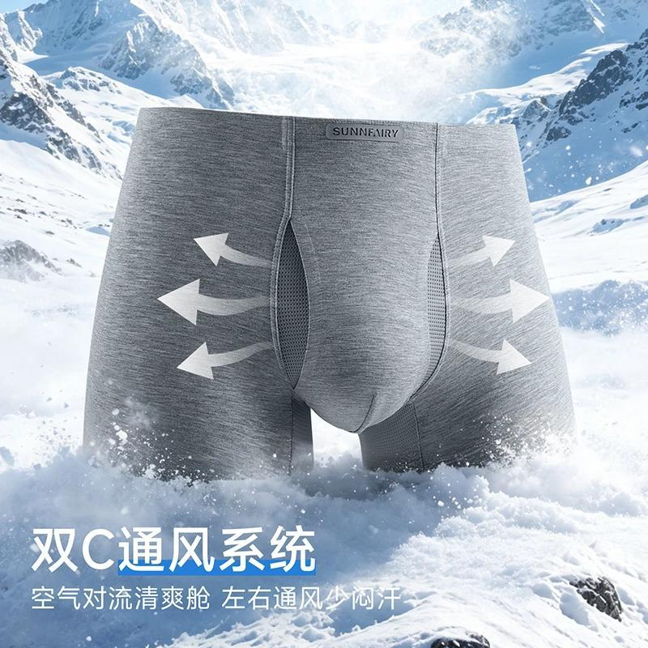
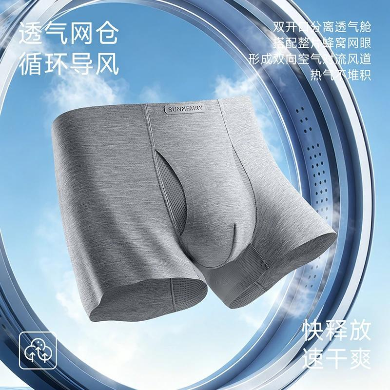
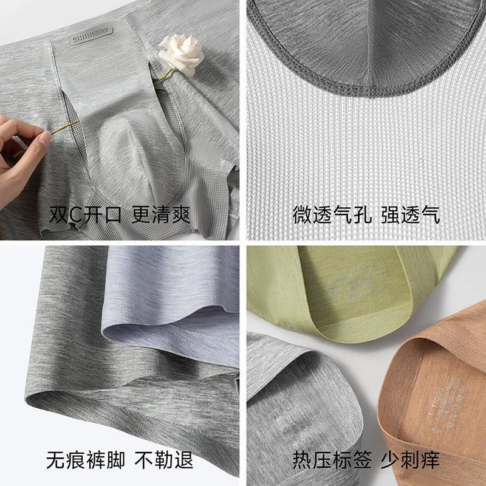

原商品
标题：夏季双C囊袋洞洞凉感内裤透气舒适无痕男士内裤男款四角平角短裤
价格：15.74


改款后
标题：男士夏季洞洞透气凉感无痕双C囊袋平角内裤
- 双C囊袋设计，促进局部通风与空气对流
- 洞洞透气结合微透气孔，夏季穿着更清爽
- 凉感速干设计，兼顾导汗与透气体验
- 无痕裤脚不勒腿，日常贴身穿着更舒适
- 平角版型覆盖完整，配有透气网包
详情文案：采用双C囊袋与透气网包设计，形成局部通风结构，配合洞洞透气和微透气孔，促进空气对流。大风量导汗设计兼顾透气与速干表现，适合夏季高温环境下穿着，帮助保持清爽体验。 凉感设计贴合夏季穿着需求，无痕结构减少贴身穿着时的突兀感。无痕裤脚不勒腿，在保持平角版型完整覆盖的同时，兼顾日常活动时的舒适度。 这款男士平角内裤面向重视透气、清爽与舒适体验的成年男性，可用于夏季日常贴身穿着。双C通风系统、凉感速干和无痕裤脚相互配合，满足高温季节对通风与穿着舒适度的需求。
候选关键词：平角内裤(100), 男士内裤(100), 男款(96), 夏季(95), 洞洞透气(94), 凉感(92), 无痕(92), 双C囊袋(91), 速干(88), 透气网包(86), 无痕裤脚(84), 不勒腿(83), 微透气孔(81), 大风量导汗(78), 四角短裤(74)









